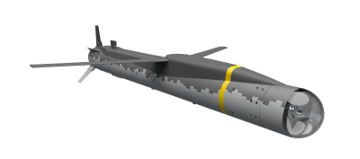
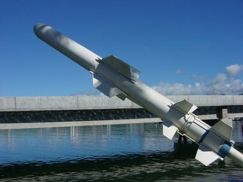
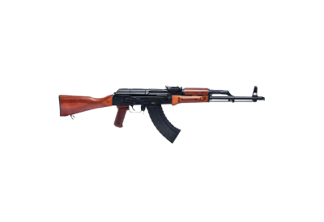
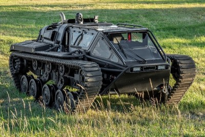
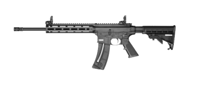
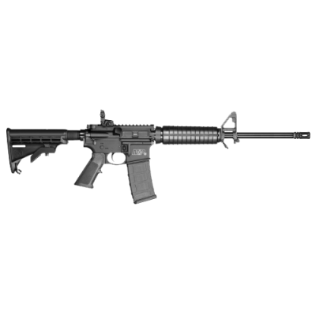
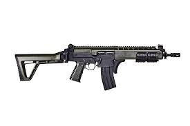
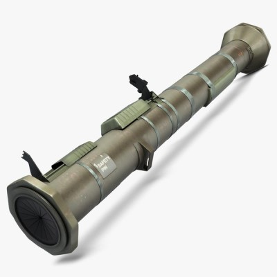
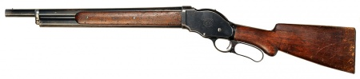
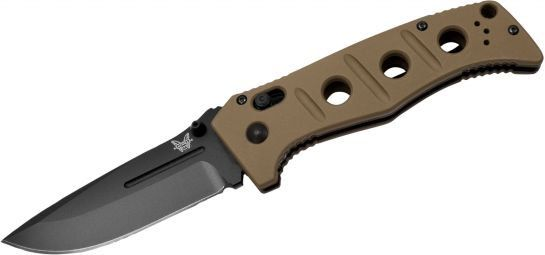

| Número | Nome | Valor | Ilustração | Vídeo |
|---|---|---|---|---|
| 0001 | Míssil Tomahawk
Esses mísseis surgiram durante a Guerra do Golfo (1991) e contêm 450 quilos de explosivos. Eles voam a quase 900 quilômetros por hora e têm um alcance em torno de 2.000 quilômetros, com a capacidade de mudar de altura durante a trajetória. São disparados na vertical, a partir de navios militares. Shopee - Mercado Livre |
US$ 1.000.000 |  | |
| 0002 | Míssil Arpão
O Harpoon é um tudo-tempo, over-the-horizon , mísseis anti-navio , desenvolvido e fabricado pela McDonnell Douglas (agora Boeing Defense ). O Míssil de Ataque Terrestre Standoff (SLAM) é uma variante de ataque terrestre. O Harpoon regular usa radar ativo e voa logo acima da água para escapar das defesas. Amazon - Ponto Frio |
US$ 1.406.812 |  | |
| 0003 | AK-47
"A AK-47, ou Avtomat Kalashnikova, 1947 (Rifle Automático Kalashnikov, modelo de 1947), leva o nome de seu fundador e o ano em que começou a operar. O russo Mikhail Kalashnikov (1919-2013) foi sargento da 108ª Divisão de Tanques do 24º Regimento do Exército Vermelho da URSS, então sobre a direção de Stalin, durante a Segunda Guerra." Mercado Livre |
US$ 5.000 |  | |
| 0004 | Tanque EV3-F4
Originalmente construídos para combate em terrenos irregulares, os tanques do tipo Ripsaw podem acomodar até quatro pessoas em sua versão “não-militar”. O mais recente, o EV3-F4, possui um motor V8 6.6 de 800 cv no centro do veículo, chegando à velocidade máxima de 96 km/h. Magazine Luiza - Shopee |
US$ 425.000 |  | |
| 0005 | Fuzil Smith & Wesson M&P15-22 SPORT
O Rifle M&P15-22 SPORT possui um handguard (protetor de mão) fino e de alta qualidade com 10 polegadas de comprimento, que incorpora o popular sistema da Magpul M-LOK ™. O sistema M-LOK permite que os proprietários destes rifles personalizem facilmente seu M&P15-22 SPORT possa ter acessórios instalados sem a removeção do handguard. Quem comprar este modelo de rifle têm a opção de montar facilmente vários acessórios compatíveis com M-LOK ou incluir um número de seções de trilho no estilo Picatinny, projetadas para acomodar outros acessórios (item adquirido separadamente). O M&P15-22 SPORT vem com o padrão de miras dobráveis mais populares disponíveis para Rifles com alça e massa de mira em polímero leves e duráveis, melhorando ainda mais o desempenho do novo M&P 15-22 Sport .22LR. Ponto Frio |
US$ 2.500 |  | |
| 0006 | Fuzil Smith & Wesson M&P15 SPORT II
Os rifles M & P15 são os rifles esportivos modernos ideais. Construídos para realizar vários usos em várias condições, os rifles M & P15 são tão versáteis quanto confiáveis. Projetados para uma ampla variedade de aplicações recreativas, de tiro esportivo e profissionais, os rifles M & P15 são fáceis de equipar, mas difíceis de largar. Os rifles M & P15 são leves e robustos, incorporando a melhor combinação de função e forma. Shopee |
US$ 5.000 |  | |
| 0007 | CARABINA IMBEL 5,56 IA2
As armas IMBEL, são avaliados no Centro de Avaliação do Exército. Atende às necessidade específicas das áreas civil e de segurança. Possui carregador de grande capacidade, bifilar, permitindo maior poder de fogo ao usuário. Em tamanho compacto, mas ainda robusta, fornece excelente precisão de tiro. Mercado Livre - Amazon |
US$ 4.000 |  | |
| 0008 | M136 AT4
A principal arma antitanque leve do Exército. O M136 AT4 é um rifle usado principalmente pelas Forças de Infantaria para combate e derrota de armaduras leves. Shopee - Magazine Luiza |
US$ 1,480.64 |  | |
| 0009 | Onyx Roses: Winchester Model 1887
Esta espingarda foi desenvolvida pela primeira vez em 1887 por demanda de uma espingarda de repetição para homens da lei e cowboys usarem. Para muitos, dois tiros não eram poder de fogo suficiente para uma arma de dispersão e uma espingarda de repetição era necessária para fazer o trabalho. Americanas |
US$ 0 |  | |
| 0010 | Faca tática 2750SGY-3
A faca dobrável tática 2750SGY-3 Auto Adamas traz conforto na mão para a frente com uma construção semelhante a um tanque em que você pode confiar sua vida. Cuidadosamente redesenhado para aliviar sua carga, enquanto continua a oferecer desempenho incomparável em todos as aplicações de uso intenso; o mais forte ficou ainda mais rígido. Amazon - Mercado Livre |
US$ 324 |  |